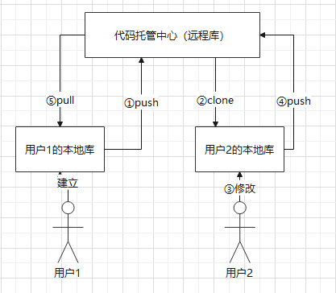
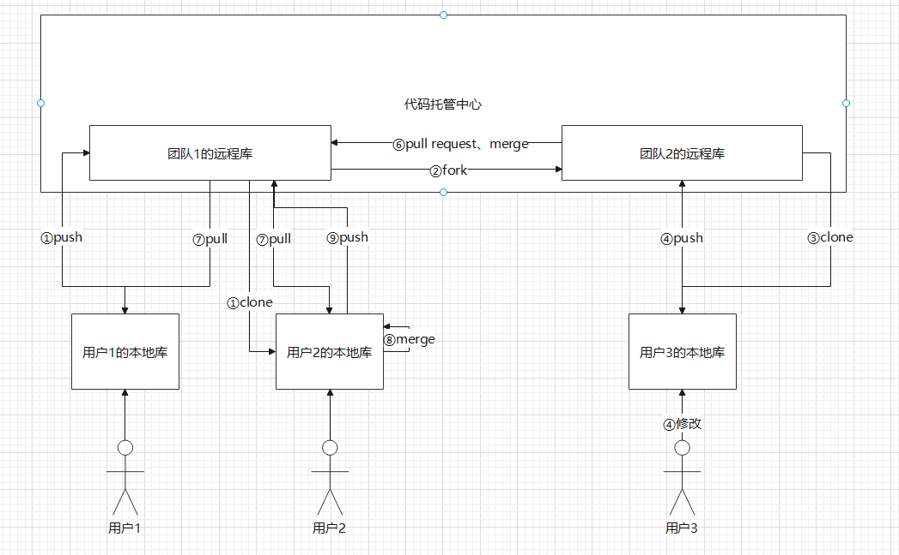

Git-团队协作机制
Git-团队协作机制
团队内合作的机制

- 用户1在本地建立本地库后可以①推送到远程的代码托管中心
- 用户2②克隆该用户的远程库，并在本地建立本地库
- 用户2在本地③修改本地库，并进行版本控制
- 用户2向远程库④推送自己的新版本
- 用户1可以⑤拉取远程库到本地，并继续修改，之后①推送到远程库，循环往复
跨团队协作的机制

- 用户1作为团队1的leader在本地建立本地库后可以①推送到团队1的远程库，用户2也可以在团队1的远程库中①克隆，并在本地建立本地库
- 团队2可以②fork团队1的远程库到团队2的远程库
- 用户3③克隆团队2的远程库，并在本地建立本地库
- 用户3在本地④修改本地库，并进行版本控制
- 用户3向团队2的远程库⑤推送自己的新版本
- 用户3在远程库中向团队1的远程库⑥pull request后经过审核，⑥merge到团队1的远程库
- 团队1的成员用户1通过⑦pull拉取远程库到本地，并继续修改
- 如果此时用户2已经对本地库有所修改，就需要先⑦pull团队1的远程库，在本地进行⑧合并，并⑨推送到团队1的远程库
具体的实现
-
克隆远程库
1
git clone <远程库链接>
-
克隆远程库默认克隆
master分支 -
如果想在
dev分支上开发，需要创建远程origin的dev分支到本地，创建本地dev分支1
git checkout -b dev origin/dev
-
-
和远程仓库建立链接
1
git remote add <远程库链接>
-
删除链接
1
git remote rm origin
-
-
查看远程库信息
1
2git remote
git remote -v #查看详细信息 -
查看分支
1
2git branch -a #查看所有分支包括本地分支和远程分支
git branch -r #查看远程分支 -
向远程库推送分支
1
git push origin <要推送到的分支名>
- 如果分支不存在则新建
- 哪些需要推送哪些不需要推送？
master分支是主分支，因此要时刻与远程同步dev分支是开发分支，团队所有成员都需要在上面工作，所以也需要与远程同步- bug分支只用于在本地修复bug，就没必要推到远程了
- feature分支是否推到远程，取决于你是否和同时是否合作在上面开发。
-
如果因为远程库和你提交的推送有冲突，需要先把对应的分支从远程拉取下来，在本地进行合并后再推送
1
git pull
-
如果没有出现合并冲突，就会自动合并
-
如果出现了合并冲突，就需要手动解决冲突并提交，见Git分支操作 | Star(￣o￣) . z Z (daiera.github.io)
-
合并后，再向远端推送
git push origin <要推送到的分支名>
-
注：如果
git pull提示提示no tracking information，则说明本地分支和远程分支的链接关系没有创建-
建立本地分支和远程分支的关联
1
2git pull origin <分支名> --allow-unrelated-histories
git branch --set-upstream-to=origin/<远程分支名> 本地分支名
-
-
参考文件
Related Articles


Comment